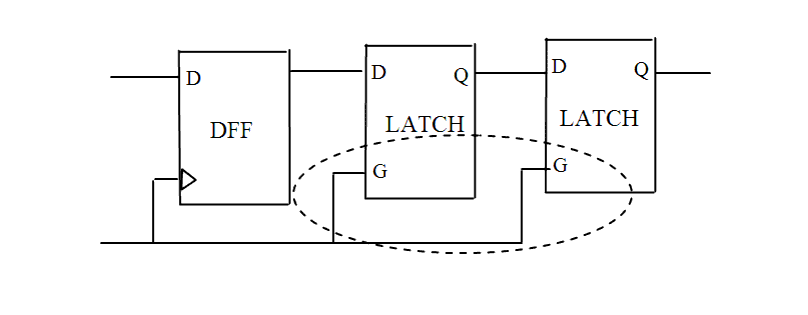

| Description | This rule fires when Leda detects a latch enabled by a clock that feeds latches enabled by the same clock. To improve timing analysis and synthesis performance, remove such structures from your design. If there are more than 2 latches in a chain, the violation will be fired only once. The latches should be connected directly. If there are combinational logics present in between the 2 latches, they will not be treated as one chain.Arguments:
%s1 is one of the latch name. |
| Policy | DESIGN |
| Ruleset | STRUCTURE |
| Language | VHDL/Verilog |
| Type | Hardware |
| Severity | Error |
This is an example of invalid Verilog code, followed by a circuit diagram that illustrates the problem:
module ntl_str84_top ; ... GTECH_FD1 U0(.D(net_01), .G(Clock), .Q(net_02)); GTECH_LD1 U1(.D(net_02), .G(Clock), .Q(net_03)); GTECH_LD1 U2(.D(net_03), .G(Clock), .Q(net_04)); // NTL_STR84 fires -- the same enable signal ... endmodule